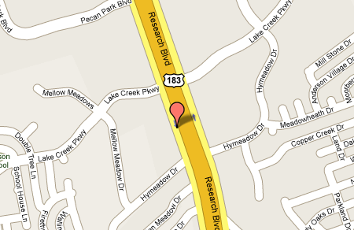

Location
Dr. Funicella's office is located in North Austin near the Research Blvd. (Hwy-183) and Hwy-620/I-45 interchange, offering easy access from Research Blvd. Our address is 13740 Research Blvd., P-4, Austin, TX 78750 (find us with Google Maps). We're on the southbound Research Blvd. frontage road just south of Lake Creek Pkwy. in a building complex named Lake Creek Office Park.
NOTE: This map requires the free Adobe Reader software to view or print.
Printable Map & Directions Sheet (Download)
Print this convenient one-page map and directions sheet to help you find our office more easily. Our phone number and address are also included for quick reference.
If coming from the North, follow Hwy-183 or Hwy-183A southbound to the Hwy 620/I-45 exit. Once off the freeway, stay on the frontage road past Hwy 620/I-45. You will pass through lights at Pecan Park Blvd. and Lake Creek Pkwy., then pass a Starbuck's Coffee, Chase Motor Bank, and a Best Pawn shop marked with a large red "PAWN" sign. The entrance to Lake Creek Office Park is marked with a tall sign (see picture at left). If you reach the Department of Public Safety office, you've gone too far and will need to loop back around on Hwy-183.
If coming from the South, follow Hwy-183 northbound and take the exit for Lake Creek Pkwy. When you reach the light at Lake Creek Pkwy., follow the U-turn lane (or make 2 immediate lefts) to end up southbound on the Hwy-183 frontage road. Pass a Starbuck's Coffee, Chase Motor Bank, and a vacant lot with a large "PAWN" sign and turn right into Lake Creek Office Park, marked with a tall sign (see picture above). If you reach the Department of Public Safety office, you've gone too far and will need to loop back around on Hwy-183.
Once you enter Lake Creek Office Park (indicated by the red pointer on the map), follow the parking lot to a T-intersection and turn left. Building P is straight ahead, and Dr. Funicella's office is Suite P-4 — all the way to your left when facing the building.
{kind=link}
Click to view a larger version of this map (opens in a new window).